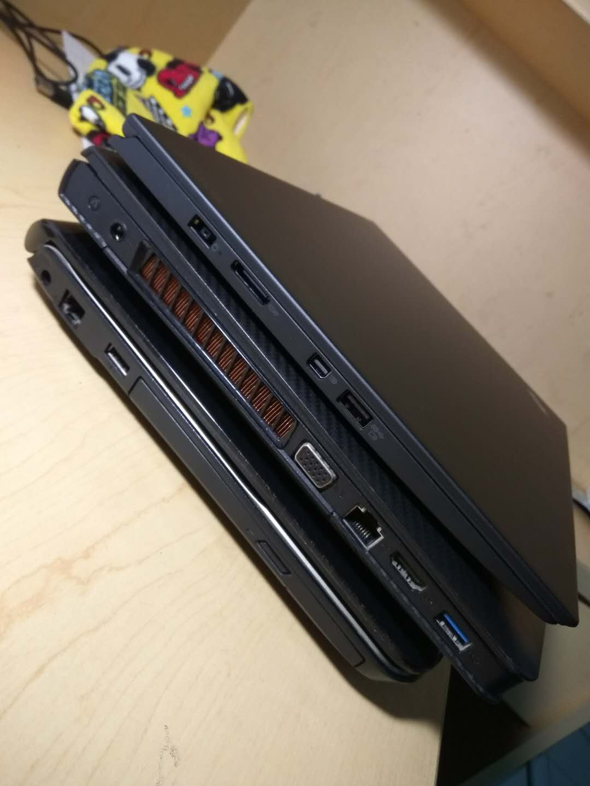

这几天有同事给笔记本装双系统，我有幸又体验了几个新型号的笔记本。我本人也用过不少笔记本，实话实说，分享一点选购笔记本和用笔记本开发的经验，防止有些朋友买电脑的时候过于盲目，甚至被套路。
对于笔记本而言，性能绝对绝对不是主要的，有太多太多其他的指标比性能更重要。首先尽量不要只看处理器的频率，i7的肯定比i5快，这个不用怀疑，但是快的未必体验好。
如果不是用于大型图像处理，仅仅是用来上网，使用一般的应用，日常办公的话i5已经足够了。另外我发现市面上大部分的i7都是标压处理器，而i5的现在一般都是低电压版，所以续航上应该是i5会更好一些。
关于i5与i7的对比，这篇文章里有详细的说明。
这个真的是越大越好。而且如果要体验好，一定要用SSD。很多应用之所以卡，有可能并不是处理器的原因，而是受到了磁盘IO的瓶颈限制。如果你用过SSD，那肯定知道有多快。如果之前没有接触过SSD，赶紧换上一块，马上让你单车变摩托。
个人认为这个真的是选择笔记本的排第二的指标。更重要的指标后面再说。基于目前的观察，市场上的笔记本的显示器不像CPU一样，不同品牌的笔记本，CPU不会有什么差别，毕竟都是用的Intel家的。但是，在显示器上很容易偷工减料。造成这种现象的原因也跟消费者的选择有关，因为一般的消费者可能知道主频、内存，高玩一点的或许还知道内存还分DDR3、DDR4等等，不过很少有人关注显示器的指标。所以笔记本厂商也很少宣传自己的显示器。这也成了笔记本上最容易偷工减料的一个部件。当选购笔记本的时候，如果你发现一款型号配置超高，不过价格特别有竞争力，那我八成可以断言它的显示器效果不怎么样……
如果你认为显示器并不重要，那你肯定没用过联想Y430p那样的显示器，这个后面在吐槽……
由于我日常工作离不开键盘，所以挺看重这个的。当然不可能所有的笔记本都把键盘做的跟thinkpad的一样好用，不过新版mac那种键盘你确定能用？褒贬不一，可以参考如何评价苹果推出的运用在新 MacBook 上的蝶式键盘？如果对键盘有要求，也需要去体验店感受一下。同样是thinkpad的键盘，T440跟X1 4th感觉也不一样，这个我亲身实测。
开合铰链是最最重要的指标了。同显示器一样，一个容易被忽视但是及其重要的属性。目前我观察到的只有少数品牌会对自己产品的开合铰链做宣传，比如ThinkPad，Panasonic，富士通。记得当时小米刚出笔记本的时候，我去小米之家体验了一下。拿起来掰了两下，感觉就像……
我还真不是米黑，我的手机一直用小米，也推荐身边的人用小米手机，不过笔记本弄成这样真的没法用，谁也不想笔记本用个半年身首异处是吧。
如果你跟我一样不幸，非要靠编码为生，那样把笔记本配置成开发机必不可少。
笔记本装Linux的一个问题就是双显卡的问题，到现在为止没有特别好的通用解决方案。由于这个原因，选购笔记本的时候还要注意独立显卡是否有支持的驱动，这一点NVIDIA的显卡占一些优势。我不太关注这个显卡问题，因为带独显的型号我一般不考虑。一个产品能做的事情太多，不能说一定做得不好，至少做得不够好的概率会大一些。这跟软件开发的道理一样，一个模块的功能要尽可能专注。
Linux下的笔记本电量控制用TLP, 跟ThinkPad很般配。
Mac上有必要就用docker。
2010年买的，i3处理器，2G内存，500G硬盘，双显卡。关键是现在还能用，前一阵子还在上面装了个kali。键盘手感很差，跟敲板子一样。不过现在还能用就已经奇迹了，中间从来没有坏过，没换过任何零件。使用期间都是我自己拆开清灰。因此对神舟印象不错。
用过之后不想再用任何联想产品。讲真，当时买的时候被套路了。当时只看配置，看显卡，看价钱，然后感觉这货配置又高价格还合理（不到￥7000）。几乎所有能偷工减料的地方这货都尽力而为了。写在规格参数的上数字绝对好看，你要配置，i7标压4核8线程，8G内存，显卡GTX850M，除了这些都是垃圾。
屏幕，泛白光。还不如我那台老神舟色彩饱满。另外屏幕边缘没有密封好么？弄得跟敞篷跑车一样。铰链，用个一年估计你就不敢合上屏幕了，铰链受力不均匀，能把它这个脆弱的外壳别断。触摸板，各种小问题。
这种游戏本很多都是这种情况，数据好看，但是不耐用。我很有理由相信现在的联想主打的游戏本还是这个德性。请各位提高警惕。
贵是有道理的。
2016年买的。键盘体验超好。目前用过最舒服的笔记本键盘。180°开合，铰链你试一下就知道坚不坚固。核显，硬件与Linux兼容度极高。吸取了联想430p的教训，当时买X1之前去实体店体验了一把。配置硬件都不错，但我怀疑ThinkPad实体店的导购很可能没经过上岗培训。
我: "这个支持无理由退货么？"
导购小哥："好好的你退什么货？"
我："我需要装Linux，如果不合适就要退。"
导购小哥："好好的重装什么系统？"
我："……"
（魔都上海的ThinkPad体验店）
ThinkPad要是再这样不注重C市场，光靠2B业务，迟早药丸。
当时顺便体验了一下DELL XPS，的确也非常好。细节处理的很好，就是键盘手感欠佳。
贵是有道理的。
去年买的。唯一问题是键盘手感欠佳，好在我这还是各老版mac。一学长买了新版15顶配，去敲了两下感觉毫无手感可言。做工没的说。
之前一直担心Mac跟Linux不兼容，用了之后发现不兼容的地方的确有，不过很少。必须用Linux环境开发的情况下可以用docker解决。但软件的体验比Linux上面好太多。
从上到下，X1， Y430p， 精盾K480。
现役Mac Pro 13.